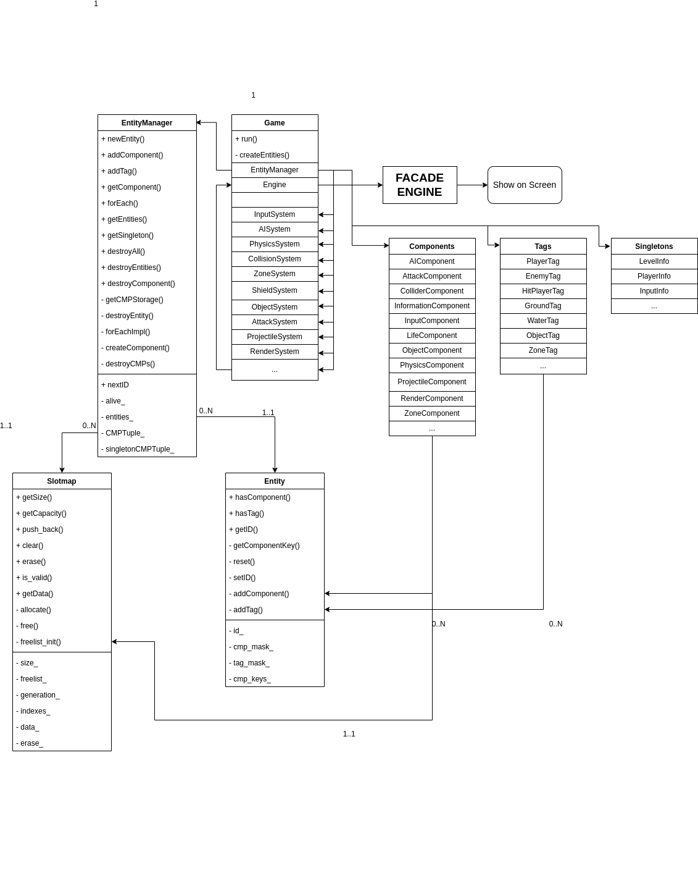
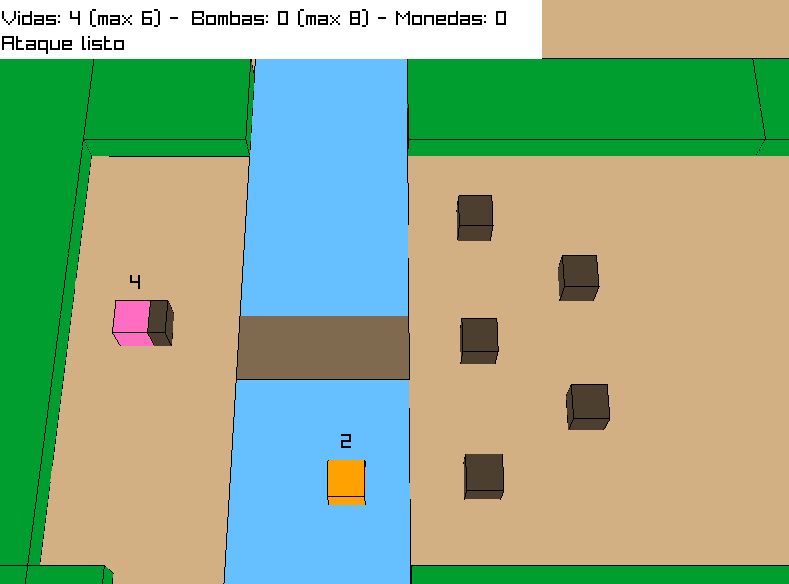
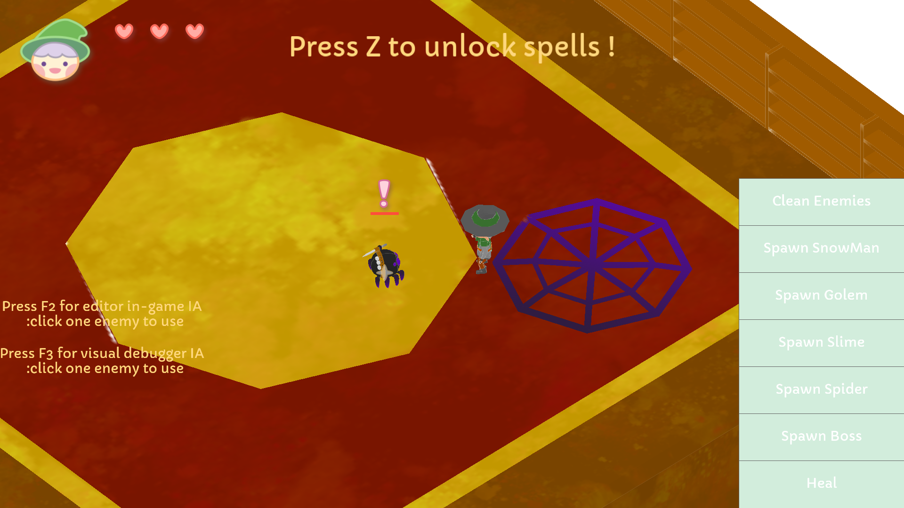

Two Wonders is a 3D action-adventure game with an isometric view, inspired by games like Tunic or The Legend of Zelda, where exploration is key element. The game combines strategic puzzle-solving with elemental combat, where players must use different elemental abilities to defeat enemies, each possessing unique elemental strengths and weaknesses.
The game was entirely developed from scratch in C++, including both the game itself and the underlying technology.
Primary Role: AI programmer
My Contributions
Entity-Component-System(ECS)
ECS is an architecture that separates entities into components (data) and systems (logic).
Entities are just containers, components define characteristics, and systems process the logic.
This allows for greater flexibility and optimization in managing game objects.
I worked on the implementation of the ECS, specifically in the construction of SlotMap matrix structure that would allow
us to store the data of the components that each entity could have in binary key system.
Then, we implement entity manager which contains functions related to the managment of entities like their Creation, addition of components or tags
and their destruction.

Zelda Model
Our game is based on the model of The legend of Zelda. For this reason, we start by implementing its basics mechanics such as collecting objects, sword attack, shield, open doors among others.
My job here was to implement the basic Zelda enemies such as the Keese (random movement), Octorok (random movement and shooting),AquaMentus (fires 3 projectiles) or RiverZora (change position and shoot towards the player)

AI Engine
I developed an AI engine from scratch in c++ which would be in charge of processing different entities
such as enemies or npcs and giving them behaviors according to their previous design.
The technologies that make up this engine have been developed following these steps: design, implementation and testing/fixing alternatively.
AI Component
This component define characteristics about AI entities.Between them, we can find fisics aspects(velocity, aceleration or position) ,
flags to know what alert states are active or if it detect player, radius(detection,attack,arrival), path, behaviour tree instance, perception aspects(field of view,distance to listen) and timers to
manage spawning,couldowns, heal among others.
AI Manager
This manager is responsible for generating entity AIs using the data provided in a JSON file.First, it
extracts information such us position, rotation, scale, type, combat characteristics and more.
Then, create a specific behaviour tree for each enemy type, assign the necessary components and tags.
AI System
This system update the perception and behavior of enemy entities in the game, detecting the player and updating a shared "BlackBoard" with relevant information such as positions, life states and potential targets. Additionally, it runs behavior trees for each entity based on its state, provides data for visual debugging (such as vision cones), and ensures consistency by removing outdated information from non-relevant enemies.
Behaviour Trees
Structure used in AI to model the behaviour of entities whose main function is organize and execute tasks or actions in a
hierarchical and modular way.
At a tecnical level, behaviour tree class it's responsible for the creation of the nodes controlling and managing the reserved memory space, as well as,
their correct execution and node class contains virtual run functions tha all nodes implement, differentes states that result from
the execution and the context(references to components or managers).
From the latter, the selector, sequence and decision node is created.
My work hear consist in design the bt diagram from each enemy,create all necessary nodes(conditions and actions) and after create the structure in AI manager. Finally, I test the enemies in
a level called "Gym" with obstacles and targets help myself with debuggers and in-game editor.

Blackboard
Is a shared data container to manage communication and coordination between different AIs.It is used by behaviour tree and updated by AI system.
In my case I used it to communicate slime and boss type AIs which had to know their life, active action, alertness among them. It also contains data on the spawn position, direction and vision cones.
Steering Behaviours
These behaviors allow agents to move realistically through the environment, adjusting their direction and speed in real time based on their objectives and environmental conditions.
In Two Wonders I implement the following types of movement: Seek, Arrive, Flee, Pursue, Avoid, Evade and Flocking. All of these return a Steer_t structure, which contains information about the agent's speed, orientation, and whether it has arrived.
Pathfinding
It is a method used for agents to find the most optimal path between two points. In our case, we use
it to make enemies move towards the player at long distances and so they can return to their patrol
position after a chase. In both cases the origin will be the current position of this.
To determine the navigable areas for the AIs, we have created a system of navigation meshes that are placed on the level model and through a script we obtain the vertices, centers and orthocenters for each one compiled in a json file. Then, our maps is responsible for importing all this information into a singleton called navmesh_info and
creates the NavMesh entities that will be used for later debugging.
Finally, the A* algorithm has been implemented that uses the Euclidean distance as a heuristic. This method works with directed weighted graphs, so a Graph class has been created that is responsible for creating the nodes and connections from the navigation meshes.
Sensorial Perception
Two Wonders uses a vision-based perception system that uses a cone as a field of vision which emerges
from the head towards where the agent is facing and has a ray system for obstacle detection.
In addition, it has perception by ear through alert radios that determine the volume of the
sound that the agent can capture and the minimum time to detect you.
Both have iconography to show feedback to the player about when and how they detect it.